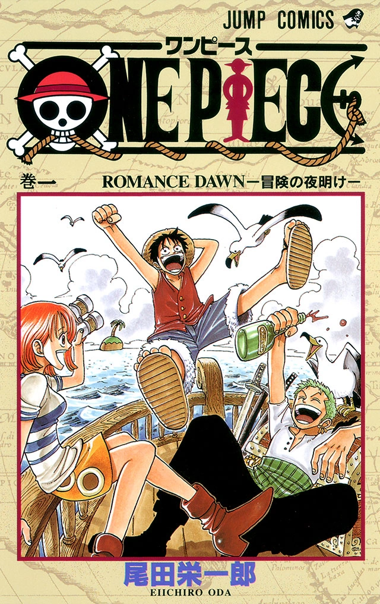
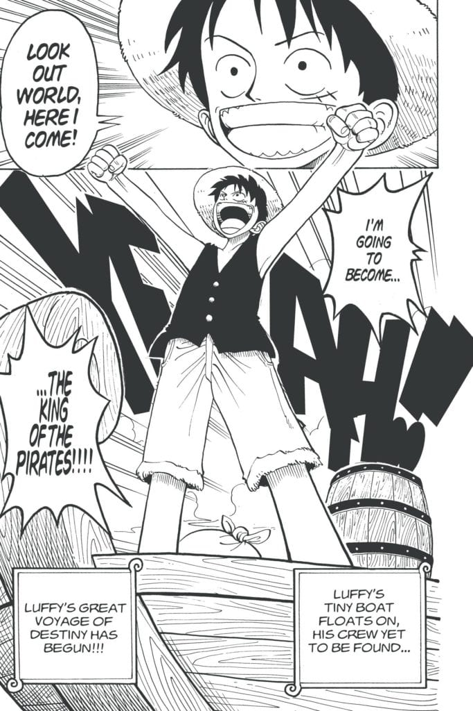
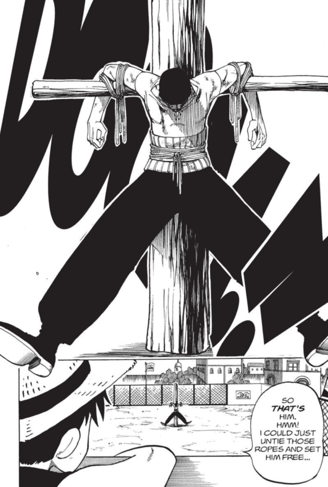
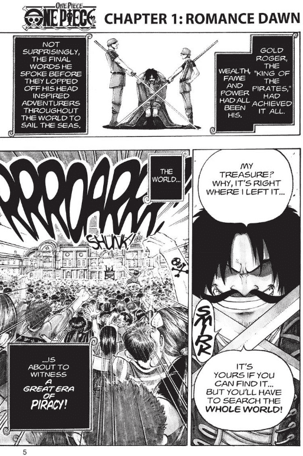
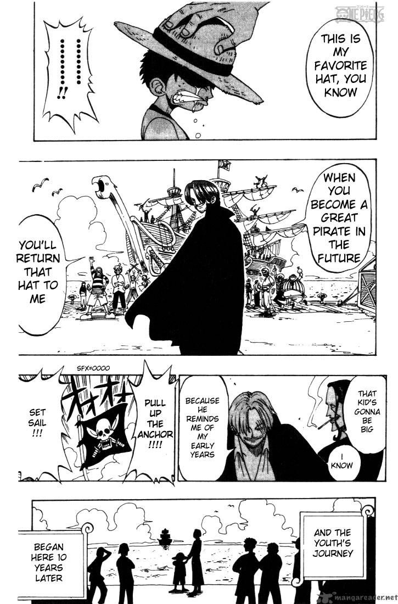

มังกี้ ดี. ลูฟี่
เด็กหนุ่มผู้มุ่งมั่นที่อยากจะเป็นราชาโจรสลัด มีนิสัยตรงไปตรงมา กล้าหาญ และให้ความสำคัญกับเพื่อนพ้อง

จุดเริ่มต้นของการเดินทาง
มังงะเล่มที่ 01
ก่อนจะมีลูกเรือ การเดินทางสู่แกรนด์ไลน์ หรือการตามหาสมบัติในตำนาน ทุกอย่างเริ่มต้นจากเด็กหนุ่มคนหนึ่ง หมวกฟางหนึ่งใบ และความฝันที่จะเป็นราชาโจรสลัด
01 — เนื้อเรื่องโดยย่อ
ONE PIECE เล่ม 1 เปิดเรื่องด้วยการแนะนำ มังกี้ ดี. ลูฟี่ เด็กหนุ่มผู้มีความฝัน
ที่จะออกตามหาสมบัติวันพีซและเป็นราชาโจรสลัด ระหว่างทางเขาได้พบกับโคบี้
และโรโรโนอา โซโร ก่อนจะเริ่มต้นเส้นทางการเป็นโจรสลัดและพบผู้คนที่จะเข้ามามีบทบาทในการผจญภัยของเขาต่อไป
02 — ภาพจากในเล่ม
ภาพบางส่วนจาก ONE PIECE เล่ม 1: ROMANCE DAWN




ภาพประกอบจาก ONE PIECE เล่ม 1
03 — สารบัญ
เล่มแรกประกอบด้วย 8 ตอน เล่าเรื่องตั้งแต่จุดเริ่มต้นของลูฟี่ ไปจนถึงการพบตัวละครสำคัญในช่วงแรกของการเดินทาง
04 — ตัวละคร
ทำความรู้จักตัวละครที่มีบทบาทในช่วงเริ่มต้นของเรื่อง
เด็กหนุ่มผู้มุ่งมั่นที่อยากจะเป็นราชาโจรสลัด มีนิสัยตรงไปตรงมา กล้าหาญ และให้ความสำคัญกับเพื่อนพ้อง
นักดาบผู้มีความมุ่งมั่นที่จะก้าวขึ้นเป็นนักดาบอันดับหนึ่งของโลก เขาได้กลายมาเป็นหนึ่งในบุคคลสำคัญที่ร่วมเดินทางไปกับลูฟี่
หญิงสาวที่ปรากฏตัวในช่วงท้ายของเล่มแรก เป็นอีกตัวละครที่ชวนให้ติดตามเรื่องราวต่อไป
05 — ข้อมูลหนังสือ
ONE PIECE เป็นผลงานมังงะที่เขียนและวาดโดย เออิจิโระ โอดะ เล่ม 1 ใช้ชื่อว่า “ROMANCE DAWN” และเป็นจุดเริ่มต้นของเรื่องราวการผจญภัย ของลูฟี่และการตามหาสมบัติวันพีซ วางจำหน่ายครั้งแรกในญี่ปุ่นเมื่อวันที่ 24 ธันวาคม 1997 ประกอบด้วยบทที่ 1-8 ฉบับปกอ่อนภาษาอังกฤษของ VIZ มีจำนวน 216 หน้า
ข้อมูลหนังสือจาก : VIZ Media — One Piece, Vol. 1 · ONE PIECE.com — Volume 1
06 — คำถามที่พบบ่อย